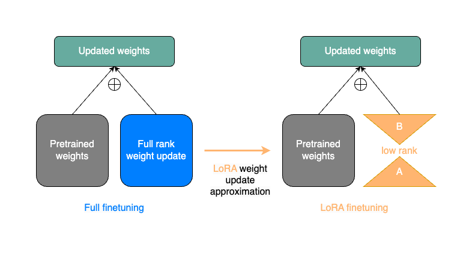

PEFT Explained: LoRA and QLoRA

- LoRA (Low-Rank Adaptation)
Instead of fine-tuning all weights, LoRA fine-tunes two much smaller matrices that approximate the weight changes.
This results in a small "LoRA adapter" (measured in MBs) that can be applied to the original, frozen LLM.
- QLoRA (Quantized Low-Rank Adaptation)
An even more memory-efficient version of LoRA.
QLoRA quantizes the LLM's weights to a lower precision (e.g., 4-bit) before adding the LoRA adapters.
This allows fine-tuning of large models on consumer-grade GPUs.